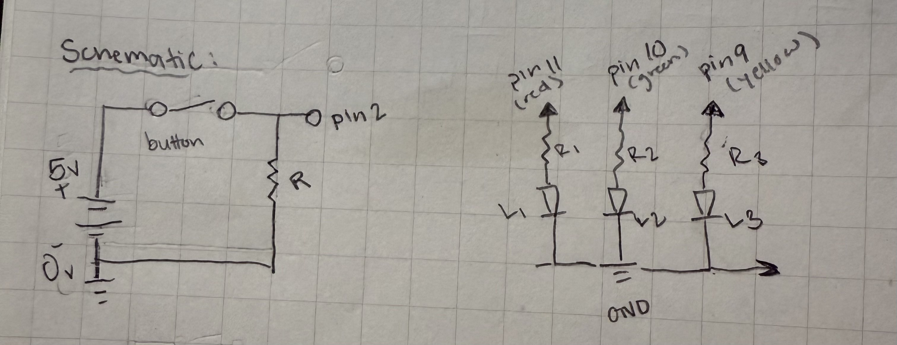
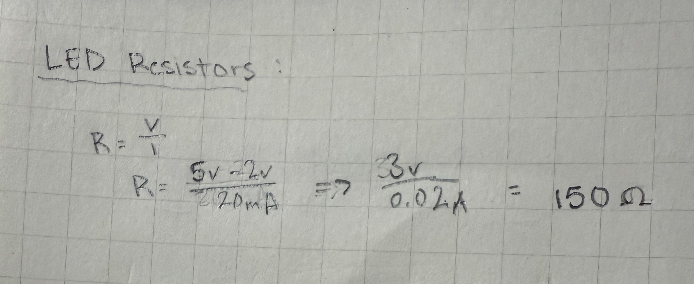
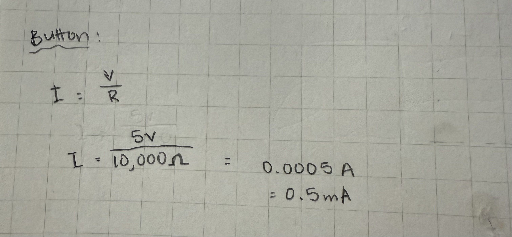
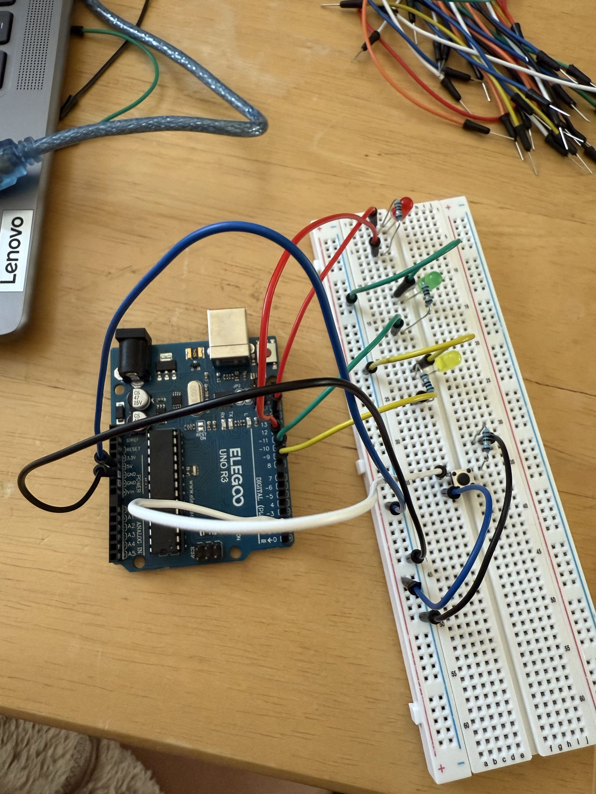
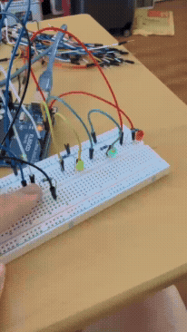
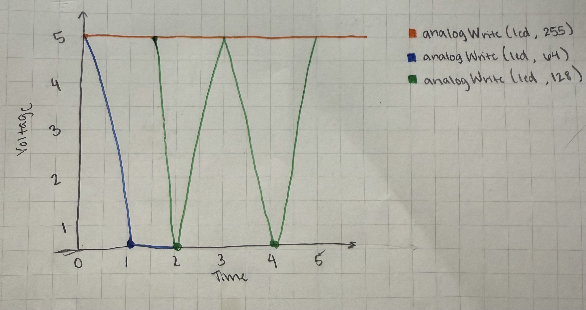
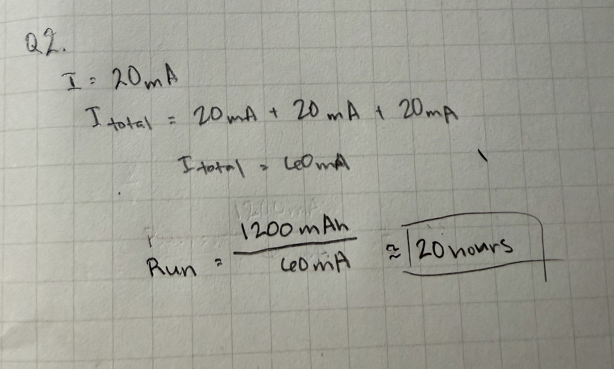

For this assignment I was tasked to create a light-up toy using a pushbutton and three LEDs that alternately fade in a sequence. To do this I used an Arduino to program and power the LEDs and pushbutton. In addition, I used resistors and jumper wires to safely allow current to flow from the Arduino board to the LEDs and pushbutton.

In this schematic, it shows three LEDs that are each connected to digital pins 11, 10, and 9 on the Arduino board each LED has its own resistor of approximately 150 ohms each. The green and yellow LEDs also share the same common ground connection or the "GND" In addition to the LEDs, there is pushbutton that also has its own resistor and shares the same ground connection as the LEDs. One of the pins on the pushbutton is connected to the breadboards positive rail, that connects to the Arduino's 5V pin.

For the LEDs, I used Ohm's law to find the appropiate resistor value for each LED. Based of my calculations each resistor should have a value of 150 ohms per LED to limit the current and prevent burning out the LEDS or Arduino board.

As for the pushbutton, I used a 10,000 ohm resistor to keep the button input as low as possible when not pressed. When the button is press, the resistor limits the buttons current of approximately

This is my completed physical model of the circuit. It is using a breadboard, three LEDs, three resistors, a pushbutton, and jumper wires. Each LED has a 150 ohm resistor and from the resistor it is connected to a digital pin. The red LED is connected to digital pin 11, the green LED to pin 10, and the yellow LED to pin 9. Though for the red LED on the left furthest side it has a wire connecting the LED to the common ground or "GND" pin, to which the LED is connected to its own resistor, and a jumper wire connecting the resistor to pin 11. For the green and yellow LED, the short leg has a jumper wire that is connected to the breadboard's negative rail that is connected to one of the Arduino's GND pin. They also each have a 150 ohm resistor to which a jumper wire connects the resistor to their digital pins 10 and 9. As for the pushbutton it has one resistor that is connected to the shared GND as the green and yellow LEDs. One of the other pins on the button is connected to the postive rail that links to the Arduino's 5V pin. Lastly, one of the other pins is connected to the digital pin 2.
This is the snippet of code I created on Arduino! The program slowly turns on each LED alternately after the button is pressed, if the button is being held the sequence will repeat continuously until it is let go.
const int redLED = 11; // Set pin 11 as the red LED
const int greenLED = 10; // Set pin 10 as the green LED
const int yellowLED = 9; // Set pin 9 as the yellow LED
const int buttonPin = 2; // Set pin 2 as the pushbutton
int buttonState = 0; // Creating a variable to define the button's state.
void setup() {
//Setting all LEDs as outputs
pinMode(redLED, OUTPUT);
pinMode(greenLED, OUTPUT);
pinMode(yellowLED, OUTPUT);
pinMode(buttonPin, INPUT); // Set the button pin as an input.
}
void loop() { // Repeat this program continuously.
buttonState = digitalRead(buttonPin); // Read whether the button is pressed.
if (buttonState == HIGH) { // Start the sequence when the button is pressed.
// Fade the red LED in.
for (int brightness = 0; brightness <= 255; brightness += 5) { // Red LED's brightness slowly increases.
analogWrite(redLED, brightness); // Set the red LED brightness.
delay(40); // Wait briefly before brightness transition.
}
// Fade the red LED out.
for (int brightness = 255; brightness >= 0; brightness -= 5) { // Slowly decrease red LED's brightness.
analogWrite(redLED, brightness); // Red LED dims.
delay(60); // Wait briefly before brightness changes.
}
// Fade the green LED in.
for (int brightness = 0; brightness <= 255; brightness += 5) { // Slowly increase green LED's brightness.
analogWrite(greenLED, brightness); // Set the green LED brightness.
delay(40); // Wait briefly before brightness changes.
}
// Fade the green LED out.
for (int brightness = 255; brightness >= 0; brightness -= 5) { // Slowly decrease green brightness.
analogWrite(greenLED, brightness); // Green LED dims.
delay(40); // Wait briefly before brightness changes.
}
// Fade the yellow LED in.
for (int brightness = 0; brightness <= 255; brightness += 5) { // Slowly increase yellow brightness.
analogWrite(yellowLED, brightness); // Set the yellow LED brightness.
delay(40); // Wait briefly before brightness changes.
}
// Fade the yellow LED out.
for (int brightness = 255; brightness >= 0; brightness -= 5) { // Slowly decrease yellow brightness.
analogWrite(yellowLED, brightness); // Yellow LED dims.
delay(40); // Wait briefly before brightness changes.
}
} else { // Run this when the button is released.
digitalWrite(redLED, LOW); // Turn off the red LED.
digitalWrite(greenLED, LOW); // Turn off the green LED.
digitalWrite(yellowLED, LOW); // Turn off the yellow LED.
}
}

This GIF shows the final product of my circuit and Arduino program. Once the button is pressed each LED fades one at a time with a duration for about two seconds each.


- If all three LEDs are simultaneously and each draw approximately 20mA each, the total current draw would be 60mA. With a 1200mAh battery, theoretically the LEDs would be able to run for about 20 hours.
- I tested this using a red LED, I measured the voltage when it was on and it was about 1.9V to 2.0V. compared to the theoretical voltage of a red LED (1.8V-2.0V) the difference was very small.
- For this assignment, I did not use AI tools to complete this assignment.